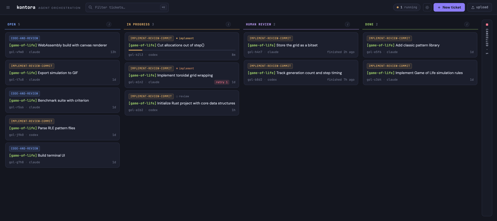

Multi-stage pipelines, git worktree isolation, kanban board.
Paste this into Claude Code, Pi, or any AI agent:
Help me install and set up Kontora: llms.txt
brew install kontora
go install github.com/worksonmyai/kontora/cmd/kontora@latest

Markdown file with a title and description. Kontora picks it up automatically.
Implement → Review → Commit. Orchestrated autonomously.
PRs ready for review. Full audit logs provided per execution.
Chain stages with per-stage retry, rollback, and failure policies. Implement, review, fix, commit, each with its own agent.
Every ticket runs in a dedicated worktree. Agents never conflict with each other or your working tree.
Claude Code, Pi, or anything with a CLI. Define agents as a binary and args in YAML.
Kanban board in the browser or terminal. Attach to running agent tmux sessions in real time.
pipelines: implement-review-commit: - stage: implement agent: claude on_success: next on_failure: pause - stage: review agent: claude on_success: next on_failure: retry max_retries: 1 - stage: commit agent: claude on_success: done on_failure: retry